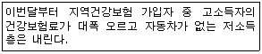
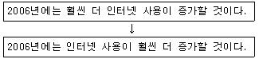
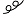
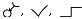
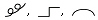
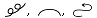
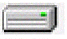
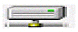
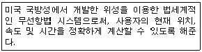
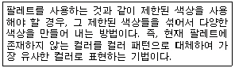

워드프로세서-2급(폐지) (2006-03-05 기출문제)
1과목: 워드프로세서 용어 및 기능
1. 다음 중 문서의 페이지 상, 하, 좌, 우에 주어지는 여백을 나타내는 용어는?
- 두문(Header)
- 마진(Margin)
- 미문(Footer)
- 스크롤(Scroll)
(정답률: 87%)

2. 다음 중 문서의 집중 관리 및 처리, 문서 용지의 이면지 사용 등과 관련이 있는 사무관리의 원칙은?
- 용이성
- 정확성
- 신속성
- 경제성
(정답률: 87%)
3. 다음 중 문서를 프린터로 출력하면서 다른 문서를 편집하려고 한다. 어떤 기능을 이용해야 하는가?
- 캐시(Cache)
- 스풀(Spool)
- 소프트 카피(Soft Copy)
- 래그드(Ragged)
(정답률: 87%)
4. 다음 중 인쇄장치에 대한 설명으로 옳지 않은 것은?
- 큰 용지에 설계도면 등을 인쇄할 때 플로터를 주로 사용한다.
- 프린터의 해상도를 높게 설정하면 출력 속도를 높일 수 있으나 인쇄의 품질은 떨어진다.
- 잉크젯(Ink Jet) 프린터는 잉크가 번지거나 노즐이 막히는 단점이 있다.
- 레이저 빔(Laser Beam) 프린터는 해상도가 높고 인쇄 속도가 빠르며 페이지 단위로 인쇄한다.
(정답률: 80%)
5. 다음 중에서 인쇄 장치의 인쇄속도 단위는 어느 것인가?
- MIPS
- PPM
- Mbyte
- BPI
(정답률: 86%)
6. 다음 중 그림 등을 배치할 때 도움이 되도록 화면에 일정한 간격으로 나타나는 작은 점들을 무엇이라고 하는가?
- 색인(Index)
- 데시멀 탭(Decimal Tab)
- 마진(Margin)
- 격자(Grid)
(정답률: 59%)
7. 다음 중 마우스의 끌어다 놓기(Drag & Drop)를 이용하여 처리하기에 적합한 것은?
- 단어의 치환(Replace)
- 그림이나 표의 위치 변경
- 문단 정렬
- 메일머지(Mail Merge)
(정답률: 82%)
8. 다음 중 워드프로세서에서 [Shift] 키에 대한 설명으로 옳지 않은 것은?
- 문단을 강제로 분리할 때 사용한다.
- 한글 입력시 윗 글자를 입력할 때 사용한다.
- 영어 입력시 대/소문자를 전환하여 입력할 때 사용한다.
- 다른 키와 조합하여 특수한 기능을 수행한다.
(정답률: 75%)
9. 다음 보기의 내용에 적용되고 있는 정렬 방식은 무엇인가?

- 왼쪽정렬(왼쪽 맞춤)
- 오른쪽 정렬(오른쪽 맞춤)
- 양쪽정렬(균등분할 맞춤)
- 가운데 정렬(가운데 맞춤)
(정답률: 73%)
10. 행정기관 내에서 자료관리에 관한 사무를 주관하는 부서 또는 담당과는?
- 문서과
- 처리과
- 관리과
- 자료과
(정답률: 62%)
11. 다음 중 인쇄조판 기능에 대한 설명으로 옳지 않은 것은?
- 미주(Endnote) : 문서의 매 쪽 하단에 고정적으로 들어갈 단어나 문구를 표시해 주는 기능이다.
- 쪽 번호 : 문서의 원하는 위치에 쪽(페이지) 번호를 부여하는 기능이다.
- 머리말(Header) : 문서의 매 쪽 상단에 고정적으로 들어갈 단어나 문구를 표시해 주는 기능이다.
- 색인(Index) : 해당 단어에 색인 표시를 하면 자동으로 색인 목록을 만들어 주는 기능이다.
(정답률: 66%)
12. 다음 중 워드프로세서의 기능에 대한 설명으로 옳지 않은 것은?
- 수식 편집기를 이용하면 수학식이나 화학식을 쉽게 입력할 수 있다.
- 하이퍼텍스트(Hypertext)는 문서의 특정단어 혹은 그림을 다른 곳의 내용과 연결시켜 주는 기능이다.
- 매크로(Macro) 기능을 이용하면 본문 파일의 내용은 같게 하고 수신인, 주소 등을 달리한 데이터 파일을 연결하여 여러 사람에게 보낼 초대장 등을 출력할 수 있다.
- 스타일(Style) 기능은 몇 가지의 표준적인 서식을 설정해 놓고 공통으로 사용되는 문단에 적용시킬 수 있는 기능이다.
(정답률: 73%)
13. 다음 중 성적표 또는 주소록 정리시에 가나다 순서나 알파벳 순서 또는 역순으로 재배열하고 싶을 때 사용할 수 있는 기능으로 알맞은 것은?
- 소트(Sort)
- 래그드(Ragged)
- 치환(Replace)
- 검색(Search)
(정답률: 81%)
14. 공고문서의 경우에 특별한 규정이 있는 경우를 제외하고는 그 고시 또는 공고가 있은 후 며칠이 경과한 날로부터 효력이 발생하는가?
- 1일
- 3일
- 5일
- 7일
(정답률: 91%)
15. 다음 중 ‘새 이름으로 저장’ 혹은 ‘다른 이름으로 저장’ 기능에서 할 수 있는 작업으로 옳지 않은 것은?
- 문서의 저장 위치 및 파일 이름을 바꿀 수 있다.
- 문서의 암호를 설정할 수 있다.
- 문서의 저장 형식을 바꿀 수 있다.
- 인쇄할 프린터의 종류를 바꿀 수 있다.
(정답률: 80%)
16. 다음 중 머리말에 대한 설명으로 옳지 않은 것은?
- 모든 쪽의 윗부분에 문구를 넣고자 할 때 유용하다.
- 머리말 영역에 쪽번호를 넣을 수 있다.
- 홀수쪽과 짝수쪽의 머리말을 다르게 넣을 수 있다.
- 머리말의 문구는 글꼴과 크기, 속성 등을 변경할 수 있으나 선을 삽입할 수는 없다.
(정답률: 71%)
17. 다음 중 문서 작성시 탭(Tab) 기능을 사용하여야 가장 효율적인 경우는?
- 일정한 간격으로 사이를 띄울 경우
- 특수한 문자를 입력할 경우
- 수학식이나 화학식을 입력해야 할 경우
- 동일한 문자를 반복하여 입력할 경우
(정답률: 88%)
18. 다음 중 문서의 페이지 맨 아래에 제목, 쪽 번호 등 특정 문자열이 쪽마다 고정적으로 반복되도록 하는 기능을 무엇이라고 하는가?
- 머리말
- 꼬리말
- 각주
- 미주
(정답률: 66%)
19. 다음과 같이 문장을 변경할 때 사용된 교정부호는?


(정답률: 91%)
20. 다음 중 문서의 분량이 감소될 수 있은 교정 부호로만 묶인 것은?



(정답률: 84%)
2과목: PC 운영 체제
21. 다음 중 한글 Windows 98의 [제어판]에 있는 [시스템]을 선택했을 때 확인 가능한 정보가 아닌 것은?
- Windows 버전과 설치시 입력한 사용자 정보
- 메모리, 시스템 리소스, 파일 시스템, 가상 메모리 등의 성능 상태
- 시스템 장치의 이상 유무
- 현재 시스템이 사용 중인 하드디스크의 용량
(정답률: 41%)
22. 한글 Windows 98에서 볼 수 있는 일반적인 대화상자에서 입력이나 설정을 하기 위하여 항목간의 선택에 사용되는 키는 무엇인가?
- [Tab]
- [Esc]
- [F4]
- [Ctrl]
(정답률: 63%)
23. 한글 Windows98의 파일 또는 폴더를 찾기 위한 [찾기] 대화상자에서 설정할 수 있는 찾기의 조건 항목이 아닌 것은?
- 포함하는 문자열
- 이름과 위치
- 파일 크기
- 사용한 시간
(정답률: 63%)
24. 한글 Windows 98의 [프로그램 추가/제거] 등록 정보 창에서 제공하는 Windows 설치의 구성 요소에 포함되지 않는 것은?
- 다국어 지원
- 시스템 도구
- 인터넷 익스플로러
- 주소록
(정답률: 50%)
25. 한글 Windows 98의 [휴지통]과 관련하여 [휴지통] 등록 정보 대화상자에서 설정이 가능한 항목이 아닌 것은?
- 휴지통의 용량을 제한할 수 있다.
- 드라이브마다 휴지통을 따로 설정할 수 있다.
- 휴지통을 비워도 특정 파일들은 제거되지 않게 설정할 수 있다.
- 파일을 휴지통에 버리지 않고 즉시 제거하도록 설정할 수 있다.
(정답률: 57%)
26. 한글 Windows 98을 사용하는 컴퓨터에서 네트워크를 위한 하드웨어가 아닌 것은?
- 하이퍼터미널(Hyperterminal)
- 랜 케이블(Lan Cable)
- 허브(HUB)
- 네트워크 카드(NIC)
(정답률: 62%)
27. 한글 Windows 98에서 [보조 프로그램]의 [엔터테인먼트]에 있는 [Windows Media Player]로 재생할 수 없는 파일의 확장자는?
- MPEG
- WAV
- AVI
- ZIP
(정답률: 63%)
28. 다음 중 한글 Windows 98의 [그림판] 프로그램에서 지우개의 색상을 설정하는 방법으로 옳은 것은?
- 전경색의 색상을 색상 표에서 설정하면 된다.
- 배경색의 색상을 색상 표에서 설정하면 된다.
- 지우개의 색상은 지정할 수 없다.
- 선의 색상을 색상 표에서 설정하면 된다.
(정답률: 61%)
29. 한글 Windows 98에서 [디스플레이] 등록 정보 창에 나타나는 각 탭에 대한 설명으로 옳지 않은 것은?
- 화면 보호기 - 일정시간 시스템을 사용하지 않을 때 화면에 나타낼 내용을 설정한다.
- 배경 - 바탕 화면에 표시되는 그림을 설정한다.
- 설정 - 화면 해상도 및 특정 모니터 종류를 설정한다.
- 화면 배색 - 화면에 나타낼 색상의 수를 설정한다.
(정답률: 58%)
30. 한글 Windows 98에서 기본 프린터로 지정된 프린터 아이콘을 더블 클릭했을 때 보여지는 것은?
- 프린터 등록 정보 창
- 프린터 드라이브 변경 창
- 다른 프린터의 추가 설치 창
- 인쇄 중이거나 인쇄 대기 중인 문서 목록 창
(정답률: 56%)
31. 한글 Windows 98에서 [시스템 도구]의 [디스크 조각 모음] 프로그램을 실행할 수 있는 매체는?
- CD-ROM
- 플로피디스크
- 압축 드라이브
- 네트워크 드라이브
(정답률: 45%)
32. 한글 Windows 98에서 제공하는 가상 메모리에 대한 설명으로 올바른 것은?
- 가상 메모리의 크기를 사용자가 설정할 수 있다.
- 가상 메모리 크기는 윈도가 자동으로 설정하기 때문에 사용자는 설정할 수 없다.
- 가상 메모리는 주기억장치에 설정된다.
- 윈도에서는 가상 메모리 기능을 이용할 수 없다
(정답률: 40%)
33. 한글 Windows 98에서 폴더를 공유하려고 할 때 설정할 수 있는 사용 권한이 아닌 것은?
- 읽기/쓰기
- 암호에 따라 다름
- 읽기 전용
- 쓰기 전용
(정답률: 49%)
34. 한글 Windows 98에서 사용하는 아이콘들 중에서 네트워크에 연결되어 있는 드라이브를 나타내는 아이콘은?


(정답률: 73%)
35. 한글 Windows 98에서 사용하는 [휴지통]의 실제 폴더 위치는?
- C:\Recycled
- C:\WindowsRecycled
- C:\Temp\Recycled
- C:\Windows\Temp\Recycled
(정답률: 50%)
36. 한글 Windows 98에서 CD-ROM을 삽입시 자동으로 실행되지 않도록 하는 단축키는 어느 것인가?
- [Alt]+[F4]
- [Shift]
- [Shift]+[Del]
- [Ctrl]+[X]
(정답률: 59%)
37. 다음 중 한글 Windows 98의 [탐색기] 창에서 폴더나 파일의 [찾기] 창을 활성화하는 바로 가기 키는?
- [Ctrl]+[F]
- [Alt]+[F]
- [Shift]+[F]
- [Ctrl]+[Alt]+[F]
(정답률: 55%)
38. 한글 Windows 98에서 사용되는 바로 가기 아이콘에 부여되는 파일의 확장자 명은?
- .LNK
- .INI
- .SYS
- .CUT
(정답률: 80%)
39. 한글 Windows 98에서 실행 중인 다른 창이나 프로그램으로 빠르게 전환하는 방법으로 가장 적절한 것은?
- [Alt]+[Tab]을 눌러 이동한다.
- [Ctrl]+[Tab]을 눌러 이동한다.
- [Ctrl]+[Alt]+[Del]을 눌러 나타나는 작업 관리자에서 이동한다.
- 제어판에서 이동한다.
(정답률: 68%)
40. 다음 중에서 한글 Windows 98의 [보조 프로그램] 메뉴에 있는 [시스템 도구]에 포함되지 않은 프로그램은?
- 디스크 정리
- 디스크 조각 모음
- 시동 디스크 작성
- 시스템 정보
(정답률: 55%)
3과목: PC 기본 상식
41. 다음의 설명 중에서 올바르지 않은 것은 어느 것인가?
- 비교항목 : 정밀도 , 디지털 컴퓨터 : 필요한 한도까지 , 아날로그 컴퓨터 : 정도가 제한됨
- 비교항목 : 프로그래밍 , 디지털 컴퓨터 : 불필요 , 아날로그 컴퓨터 : 필요
- 비교항목 : 적용성 , 디지털 컴퓨터 : 범용성 , 아날로그 컴퓨터 : 단일성
- 비교항목 : 구성회로 , 디지털 컴퓨터 : 논리 회로 , 아날로그 컴퓨터 : 증폭 회로
(정답률: 56%)
42. 다음 중 시간적 간격 없이 양방향 통신이 가능한 통신 방식은 어느 것인가?
- 반이중(Half-duplex) 방식
- 심플렉스(Simplex) 방식
- 전이중(Full-duplex) 방식
- 더블 심플렉스(Double Simplex) 방식
(정답률: 82%)
43. 다음 중 성격이 다른 소프트웨어는 무엇인가?
- DOS
- Windows 98
- OS/2
- JAVA 2
(정답률: 49%)
44. 다음 보기의 내용은 무엇을 설명한 것인가?

- GIS
- GPS
- GTS
- GDS
(정답률: 79%)
45. 다음 중 파일 압축에 대한 설명으로 옳지 않은 것은?
- 디스크 저장 공간을 효율적으로 활용하기 위해서 압축을 한다.
- 감염된 파일을 압축하면 바이러스가 제거된다.
- 압축 소프트웨어에는 알집, WinZip, Arj 등이 있다.
- PC 통신에서 파일 전송시 시간 및 비용을 절약하기 위해 사용된다.
(정답률: 70%)
46. 다음 중 하나의 컴퓨터에 두 개 이상의 CPU를 두어 프로그램을 동시에 처리하는 방식을 의미하는 용어는 어느 것인가?
- 다중 프로그래밍(Multi-programming)
- 시분할 처리(Time Sharing)
- 다중처리(Multi-processing)
- 다중 사용자(Multi-user)
(정답률: 75%)
47. 기존의 데이터 통신망을 이용해 음성 데이터 전송하기 위한 프로토콜로 확장성이 높으며, 이를 이용할 경우 기존 전화에 비해 요금도 저렴한 방식은 어느 것인가?
- VPN(Virtual Private Network)
- VoIP(Voice of Internet Protocol)
- TCP(Transmission Control Protocol)
- UDP(User Datagram Protocol)
(정답률: 50%)
48. 다음의 내용은 무엇에 대해 설명한 것인가?

- 디더링
- 엔티얼라이싱
- 모핑
- 와핑
(정답률: 71%)
49. 다음 중 컴퓨터 바이러스에 대한 대비 방법으로 가장 거리가 먼 것은?
- 출처가 불분명한 프로그램을 사용하지 않는다.
- 의심스러운 전자메일은 열어보지 않는다.
- 백신 프로그램으로 정기검사를 하고 미리 예방한다.
- 다른 컴퓨터에 침입하는 해킹방법을 배워둔다.
(정답률: 87%)
50. 다음 중 하드웨어적 업그레이드라고 할 수 없는 것은?
- 메모리 증설
- 그래픽 카드 교체
- 운영체제 업그레이드
- CPU 교체
(정답률: 51%)
51. 다음 중 중앙처리장치로부터 주변장치의 제어권을 위임받아 입출력을 처리하는 장치를 무엇이라고 하는가?
- 채널(Channel)
- 데이터버스(Data Bus)
- 제어버스(Control Bus)
- 콘솔(Console)
(정답률: 64%)
52. 다음 중 네트워크 내부에 있는 호스트를 외부의 침입으로부터 보호하기 위하여 사용하는 것은?
- TCP/IP
- Firewall
- FTP
- TELNET
(정답률: 70%)
53. 다음은 CD-ROM과 관련된 사항이다. 옳지 않은 것은?
- 데이터 전송속도에 따라 8배속, 16배속, 32배속 등으로 구분한다.
- 배속의 수치가 작을수록 처리 속도가 빠르다.
- 1배속은 150KB/sec이다.
- 일반적으로 하드디스크에 비해 데이터 접근 속도가 느리다.
(정답률: 53%)
54. 다음 중 컴퓨터에서 실행하여야 할 프로그램이나 파일을 메모리에 옮겨주는 프로그램을 무엇이라고 하는가?
- 연결편집기(Linkage Editor)
- 적재기(Loader)
- 연결기(Linker)
- 편집기(Editor)
(정답률: 52%)
55. 개별 물건에 극소형 전자태그가 삽입되어 있어 언제 어디서나 자유롭게 네트워크를 통해서 컴퓨터에 접속할 수 있는 환경을 의미하는 용어는 어느 것인가?
- 광속상거래(CALS)
- 제닉스(XENIS)
- 유비쿼터스(Ubiquitous)
- 인터라넷(Intranet)
(정답률: 80%)
56. 다음 중 컴퓨터 기억소자의 발달 순서를 올바르게 나열한 것은?
- 진공관 → IC → 트랜지스터 → VLSI
- 진공관 → 트랜지스터 → IC → VLSI
- 진공관 → IC → VLSI → 트랜지스터
- 진공관 → 트랜지스터 → VLSI → IC
(정답률: 76%)
57. 다음 중 컴퓨터에서 발생하는 문제를 예방하거나 해결하기 위한 방법으로 가장 거리가 먼 것은?
- 시스템 이상에 대비하여 부팅 디스켓을 만들어 둔다.
- 바이러스 검사를 정기적으로 실행한다.
- 시스템 설정 파일과 중요 데이터 파일은 원본 파일과 동일한 위치에 백업하여 둔다.
- 가급적 불필요한 프로그램을 설치하지 않도록 한다.
(정답률: 65%)
58. 다음 중 디스크 포맷(Format)을 이루고 있는 것이 아닌 것은?
- 면(Side)
- 필드(Field)
- 트랙(Track)
- 섹터(Sector)
(정답률: 58%)
59. 다음 중 멀티미디어의 저장 장치로 옳지 않은 것은?
- CD(Compact Disk)
- MO(Magneto-Optic)
- COM(Computer Output Microfilm)
- DVD(Digital Video Disk)
(정답률: 51%)
60. 다음 중 멀티미디어 압축 기술이 아닌 것은?
- JPEG
- AVI
- MPEG
- TMP
(정답률: 60%)